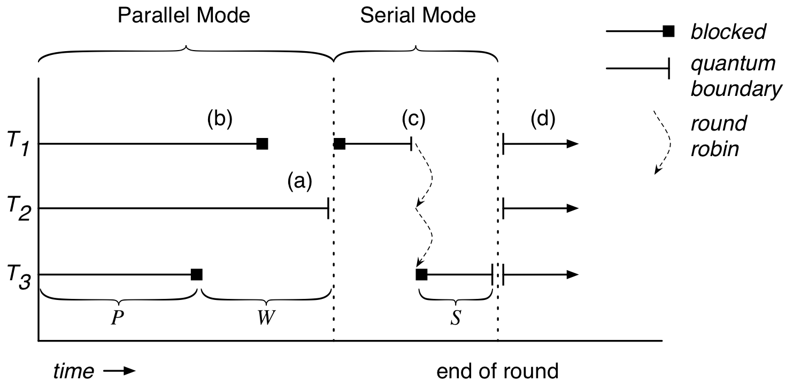
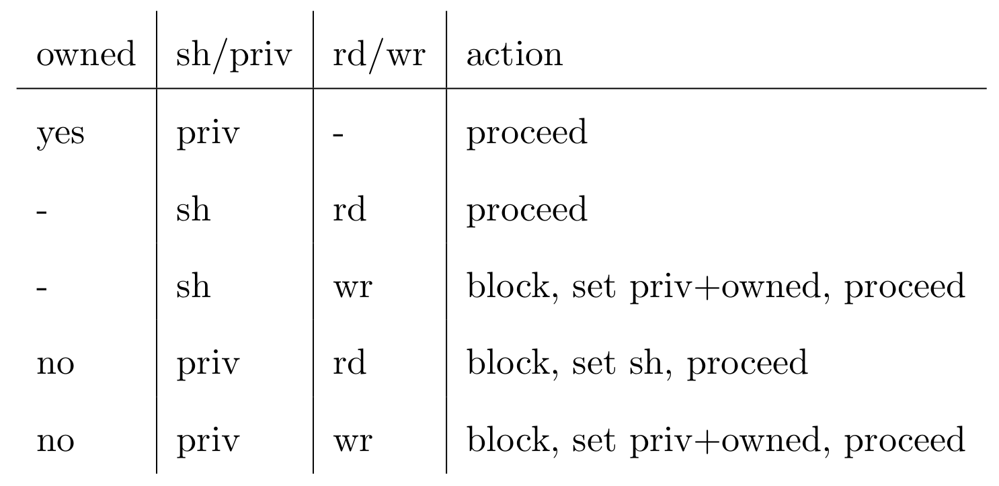

Deterministic Execution in a Java-like Language
Niels Widger
niels.widger@unh.edu
Table of Contents
Thesis
A Java-like programming language can be executed deterministically using Deterministic Shared Multiprocessing (DMP) with less overhead than a C-like programming language.
Background
Deterministic Shared Multiprocessing
- Dynamic run-time enforcement of deterministic
- Guarantees deterministic ordering of all shared memory accesses for a given input.
- Works on arbitrary code
- Do so without sacrificing performance
How does it work?
- Execute non-communicating instructions in parallel
- Recover parallelism
- Without interthread communication, thread interleaving does not affect program output
- Serialize execution during interthread communication

Communicating Instructions
- Load/store instructions to shared memory
- Modify behavior of other threads
- Enforce ordering of communicating instructions, others do not matter
Ownership Table
- Used to detect communicating instructions
- Track ownership information for each memory location
- Private - accessible only to owner
- Shared - read-only by everyone
- Access unrestricted in serial mode
- Granularity - byte, word, page, etc.

Ownership Graph
solid = proceed immediately, dotted = block until serial mode
Previous DMP Implementations
- CoreDet - DMP in software
- Modified LLVM compiler instruments load/store instructions
- Arbitrary
C/C++code - Linked with run-time framework
- Ownership table stored in shared memory
- Results: Average slowdown of 1.1x - 6x
- Good enough for debugging, maybe for deployment!
DMP Summary
- Execute arbitrary code deterministically
- Deterministic ordering of communicating instructions
- Detect interthread communication in parallel mode, defer until serial mode
- Ownership table used to detect communicating instructions
maTe - a Java-like programming language
- Pure OO programming language
- Executed in virtual machine
- Grammar, instruction set and machine architecture heavily based on Java
- Single-threaded
Architecture

maTe instruction set
aconst_null |
invokespecial |
aload |
invokenative |
areturn |
invokevirtual |
astore |
new |
checkcast |
newint |
dup |
newstr |
getfield |
out |
goto |
putfield |
ifeq |
refcmp |
in |
return |
maTe instruction set
aconst_null |
invokespecial |
aload |
invokenative |
areturn |
invokevirtual |
astore |
new |
checkcast |
newint |
dup |
newstr |
getfield |
out |
goto |
putfield |
ifeq |
refcmp |
in |
return |
Implementation
Compiler Changes
(aka things you take for granted)
forloops
for (i = 0; i < 10; i = i + 1) { ... }
- Boolean
&&and||operators
if ((a && b) || (c && d)) { ... }
!=,<=and>=operators
if (a != b) { ... } if (a <= b) { ... } if (a >= b) { ... }
Compiler Changes cont'd
Real class (float wrapper)
class Real extends Object { native Real(); native Real(Real r); native Real(Integer i); native Real add(Real r); native Real subtract(Real r); native Real multiply(Real r); native Real divide(Real r); native Real greaterThan(Real r); native Real lessThan(Real r); native Real greaterThanEqual(Real r); native Real lessThanEqual(Real r); native Integer not(); native Real minus(); native Real operator + (Real r); native Real operator - (Real r); native Real operator * (Real r); native Real operator / (Real r); native Integer operator > (Real r); native Integer operator < (Real r); native Integer operator >= (Real r); native Integer operator <= (Real r); native Integer operator ! (); native Real operator - (); native Integer equals(Object obj); native Integer hashCode(); native String toString(); native Real squareRoot(); }
synchronized blocks
for (i = 0; i < 10; i = i + 1) { synchronized (obj) { if (obj.field != null) return obj.field; } }
- Use new
monitorenter/monitorexitinstructions - Monitor stack ensures necessary
monitorexitinstructions are executed for all execution paths.
Thread class
class Thread extends Object { native Thread(); native Object start(); // begin execution of run() native Object run(); // overridden by subclass native Object join(); native Object sleep(Integer millisec); }
- Java-based threading model
Object class wait / notify methods
class Object { native Object notify(); native Object notifyAll(); native Object wait(); native Object wait(Integer timeout); }
- Asynchronous events
Virtual Machine Changes
Multithreaded Architecture
Implementing Threads
- Each
Threadgets its own PC register & VM stack - Use
pthreadsthreading library - Use
pthreads_mutex_tfor object monitors
Implementing DMP
- Goals
Enable/disable without recompiling
Minimize performance penalty when disabled
Allow per-object or per-thread behavior
- Design
- Global
dmpmodule. - DMP-specific modules for
object,thread,nlock(object monitor) andtable.
- Global
Example
int object_create(struct class *c, uint32_t n, struct object **o) { #ifdef DMP if (dmp == NULL) object->dmp = NULL; else object->dmp = dmp_create_object_dmp(dmp, object); #endif }
Object DMP
int object_load_field(struct object *o, int i) { #ifdef DMP if (o->dmp != NULL) object_dmp_load(o->dmp, i); #endif return o->fields[i]; }
Thread DMP
Table DMP
NLock DMP
DMP Statistics
Performance Enhancements
Results
Benchmarks
- Parallel radix sort - Multithreaded radix sort
- Jacobi - uses the Jacobi method to simulate temperature changes on a 20x25 plate
- Parallel DPLL - Multithreaded boolean satisfiability using the DPLL algorithm
Parameters
- threads - 2, 4, 8 or 16 threads
- quantum size - 1000, 10000, and 100000 instructions
- full serial mode or reduced serial mode
- ownership table granularity - 1, 5 and 10 depth
Evaluation
- overhead - measure difference in execution time when compared to a non-DMP virtual machine
- measure difference in performance when parameters are changed
Each benchmark was run 10 times for each combination of parameters. Run-times are averages.